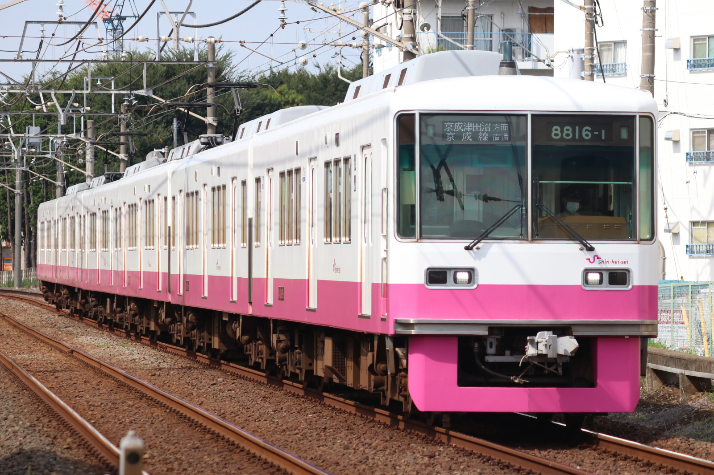

くまP撮影記録
ホーム
>
新京成電鉄
>
新京成電鉄8800形
>
新京成電鉄8800形8816F
新京成電鉄8800形8816F
編成
←千葉中央 松戸→
クハ8800-1形
モハ8800-2形
モハ8800-3形
サハ8800-4形
モハ8800-5形
クハ8800-6形
8816-1
8816-2
8816-3
8816-4
8816-5
8816-6
新製（8880F）
1990年3月9日
（日車）（〜2013/7/13）（8876→8816-6，8878→8816-5）
新製（8888F）
1990年6月10日
（日車）（〜2013/9/11）（8884→8816-1，8886→8816-3）
新製（8896F）
1991年3月27日
（日車）（〜2011/11/13）（8892→8816-4，8894→8816-2）
6両化，改番
2014年2月22日
京成合併
2025年4月1日

撮影日
2024年7月31日
列車番号
339
種別・行先
普通 千葉中央行き
撮影地
北習志野〜習志野
ホーム
>
新京成電鉄
>
新京成電鉄8800形
>
新京成電鉄8800形8816F